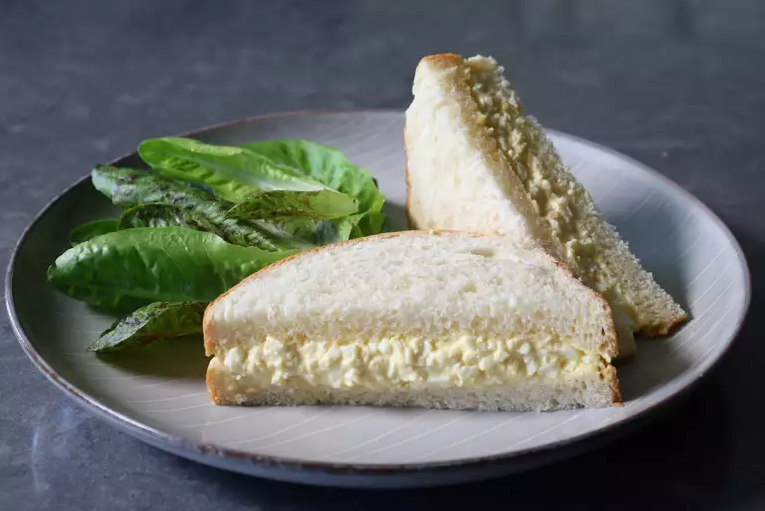

Japanese Egg Salad Sandwich

Description
Also known as tamago sando or egg sandwich, is a Japanese sandwich made of two soft slices of bread with eggs and mayonnaise in the center.
Ingredients
Kewpie-Style Mayonnaise
- 1/2 cup mayonnaise
- 1/4 teaspoon kosher salt
- 3/4 teaspoon white sugar
- 1 teaspoon Dijon mustard
- 3 dsashes hot sauce, or to taste
- 1 teaspoon freshly squeezed lemon juice
- 2 teaspoons rice vinegar
For the Sando
- 1/2 teaspoon kosher salt, or to taste
- 1/4 teaspoon white sugar
- 1 pinch cayenne pepper
- 1 tablespoon heavy cream
- 4 slices soft white bread
- 1 tablespoon unsalted butter, softened
Instructions
- Place eggs in the bottom of a saucepan. Add 1/4 inch of water. Heat over medium-high heat and bring to a boil. Cover and steam for 11 minutes. Turn off the heat and drain water carefully; pour cold water over and let cool.
- Mix mayonnaise, salt, sugar, mustard, hot sauce, lemon juice, and vinegar for Kewpie-style mayonnaise together. Cover with plastic wrap and refrigerate until needed.
- Peel eggs. Mash in a shallow bowl with the side and back of a fork until desired texture is reached. Add salt, sugar, cayenne, heavy cream, and 3 tablespoons Kewpie-style mayonnaise. Stir to combine. Wrap and refrigerate until well chilled, at least 1 hour. Taste and adjust seasonings.
- Butter bread slices and use 1/2 of the egg salad on each sandwich. Cut crusts off before serving if you're fancy.
Notes
Dijon mustard for the Kewpie-style mayonnaise can be replaced with regular yellow mustard. MSG or Hondashi(R) can be added for some extra savory-ness. Milk can also be used instead of cream to make the egg salad.